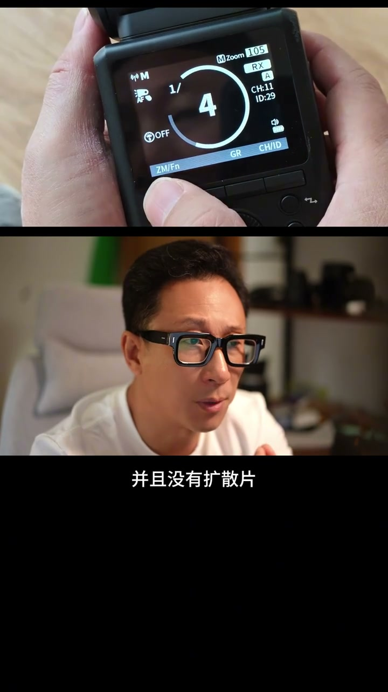

内容要点
这段视频围绕「闪光灯焦段和镜头的焦段有什么关系」展开，按时间介绍其中的关键环节。闪光灯焦段和镜头焦段有什么关系。
设置与操作流程
闪光灯焦段和镜头焦段有什么关系。先说结论。在目前绝大多数的摄影题材里两者毫无关系。一个是光线的假角。一个是视线的假角。如果你把闪光灯的焦段设置到A auto的模式。那么闪光灯会根据你镜头的变焦而跟随着变焦。保持着同一个焦。这样设计的核心理念是保证光线照射的范围和镜头拍到的范围是一致的。就是说闪光灯要把你镜头拍到的范围全部照亮
拍摄与画面处理
环境由环境光来提供亮度。所以光线的假角取决于主体的大小。这个主体可以在画面中站着笔中大也可以站着小。它和你镜头取景的范围没有什么关系。你拍同样的场景。妹子走近一点闪光灯的假角就得放大。妹子走远一点闪光灯的假角就可以说小。市面上方头的闪光灯一般焦段可以从20到200毫米。如果拉下扩散片可以广到14毫米。源头灯一般吃能28到105毫米并且没有扩散片
设置与操作流程
之前看到有朋友问我买的闪光灯焦段只有28到105毫米。那么我的70-200的镜头是不是用不了了。其实是不用担心的。那到底怎么确定拍摄是闪光灯的焦段设置到多少。这里需要运用到一些你中学学的数学三角函数。如图所示你直到妹子的身高和闪光灯到妹子的距离。这样通过三角函数你能够计算出光线的假角。通过角度和焦段的对照表你就能得到所需要的焦段值。当然你实际拍摄的时候不需要这么复杂的计算。大多数情况下你拍半身或者特写

进阶技巧
闪光灯的焦段在80到105毫米。太全身大概在50毫米左右。闪光灯的焦距越长光线就越聚越亮。闪光灯的焦距越短光线就越闪越暗。那么把闪光灯焦距放到A档或者固定在一个比较广的焦段上是不是可以。大部分情况下是可以的。这是会浪费很多灯的功率。如果你在外景拍摄时嫌弃基顶灯的亮度不够。那么闪光灯焦段的精准设置会给你带来很大的改观。你大致可以这样理解
闪光灯的焦段在80到105毫米。